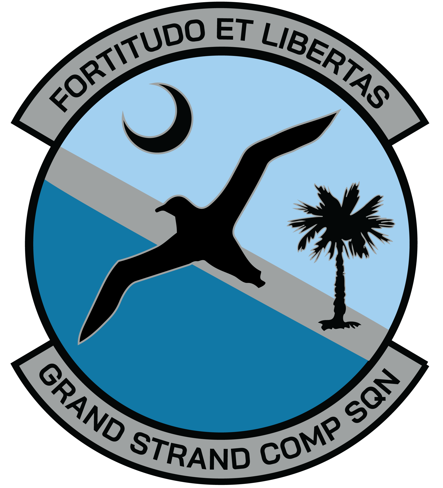
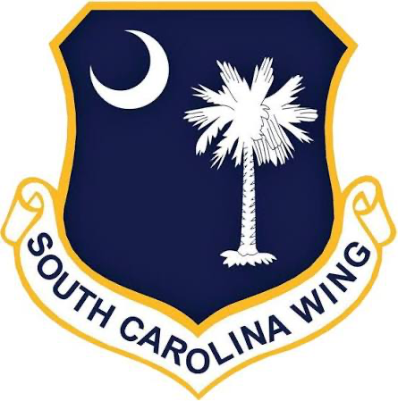

ELT Search & Location Assistant
Supports emergency locator transmitter searches using circumcenter calculations and directional-finding methods to help teams narrow a signal’s likely location.
Civil Air Patrol · MAR-SC-114
A focused collection of field support and training applications created for Civil Air Patrol members of the Myrtle Beach Grand Strand Composite Squadron.
Explore the applications

Field & training resources
Open any application directly in your browser. Each tool is designed to support a specific operational or training need.
Supports emergency locator transmitter searches using circumcenter calculations and directional-finding methods to help teams narrow a signal’s likely location.
Provides an at-a-glance Zulu time display together with CAP grid and latitude/longitude reference information for mission coordination and reporting.
An interactive study aid for practicing CAP hand signals, paulin signals, and other visual communication methods used during ground team operations.